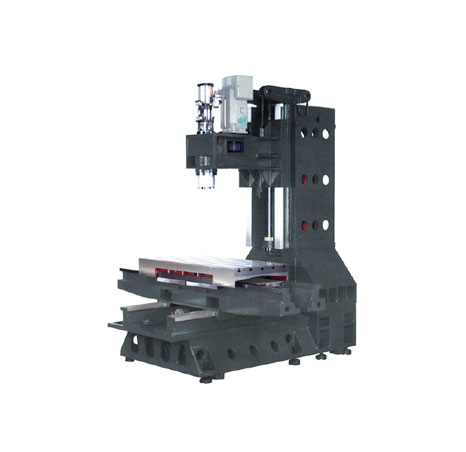
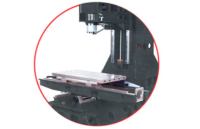
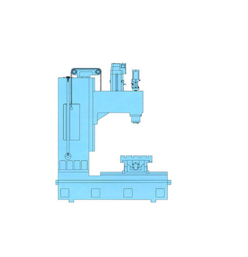

ВЕРТИКАЛЬНЫЕ ФРЕЗЕРНЫЕ СТАНКИ С ЧПУ
Вертикальные фрезерные станки оснащенный системой ЧПУ с возможностью установки 4-ой и 5-ой оси обработки.
Станина
Монолитная станины колонного типа, выполнена из мелкозернистого чугуна марки FC-30 "Meehanite" прошедшего отжиг со снятием внутренних напряжений и термическую закалку, имеет высокий предел прочности на разрыв, обладает высокими демпфирующими свойствами и существенно увеличивает жесткость станка.
Направляющие
Направляющие станины закалены (> HRC55), отшлифованы, проходят прецизионное шабрение и покрываются антифрикционным материалом TURCITE B, снижающим коэффициент трения для поддержания высокой точности в течении длительного срока. Скорость перемещения до 20 м/мин.
Шарико-винтовая пара
Высокоточная шарико-винтовая пара диаметром 40 мм класса C3 с двойными гайками. Шарико-винтовая пара установлены на подшипниках класса P4, что гарантирует высокую точность позиционирования и долгий срок службы.
Соединительные муфты. Шарико-винтовая пара напрямую соединена с линейным двигателем (1:1), что обеспечивает необходимую жесткость, точность и скорость перемещений.

Линейный направляющие качения
На станках возможна установка линейных направляющих качения нулевым зазором и полностью загруженными всем по направлениям каретками. Данные направляющие обеспечивают минимальное сопротивление движению исполнительного механизма, высокую точность и скорость перемещений, а также не требуют регулировок в процессе эксплуатации. Каждая направляющая автоматически смазывается с помощью централизованной системы смазки, которой оснащены все станки фирмы Takang.

Устройство балансировки
В фрезерных станках фирмы Takang применяется запатентованная система балансировки. Противовес перемещается по валу, что обеспечивает точность движения, прямолинейность, высокую виброустойчивость, а также точность позиционирования при перемещении станка по всем осям и отличное качество обработки.
Система автоматической смазки
Система автоматической смазки измеряет расход масла и распределяет смазку на направляющие, ШВП и подшипники.
Линейные двигатели
Привод осей X, Y, Z обеспечивается линейными двигателями.
Рабочий шпиндель
В шпиндельном блоке станков Takang используются высококлассные высокоточные подшипники (класс точности P4). «Плавающая» система крепления инструмента предотвращает нагрузку на подшипники шпинделя, что обеспечивает стабильный зажим/разжим инструмента и долгий срок службы шпинделя. Шпиндель обеспечивает широкий диапазон мощностей и скоростей обработки.

СКРЕБКОВЫЙ КОНВЕЙЕР
Скребковый ковейер для сбора стружки позволяет удалять стружку из зоны обработки.
Заголовок H1
Заголовок h2
- text text text text text text text text text text text
- text text text text text text text text text text text
- text text text text text text text text text text text
- text text text text text text text text text text text
Несколько месяцев назад мы с коллегами решили сделать многопользовательскую realtime игру, которая могла бы работать в вебе. Мы решили использовать node.js для нашего сервера. Это решение привело к очень убедительному успеху — наш сервер работал несколько месяцев без единого падения или перезагрузки процесса.
Это позволило нам сфокусироваться на проблемах, которые встречаются во всех realtime играх, без лишней суеты, ограничений и необходимости компилировать код, как это случается при использовании менее динамических языков.
Мы решили написать нашу игру на node.js, потому что мы слышали много хорошего об этой платформе и очень хотели немного с ней поиграть. И это было потрясающе — мы очень быстро вошли в тему. Для node.js существует множество любопытных библиотек, способных решать абсолютно разные задачи. Побочным преимуществом использования node для серверной части является, собственно, javascript — очень простой в обращении язык. Это позволило нам сфокусироваться на проблемах, которые встречаются во всех realtime играх, без лишней суеты, ограничений и необходимости компилировать код, как это случается при использовании менее динамических языков.
- VMC - 1100S
- VMC - 1100S
- VMC - 1100S
- VMC - 1100S
- VMC - 1100S